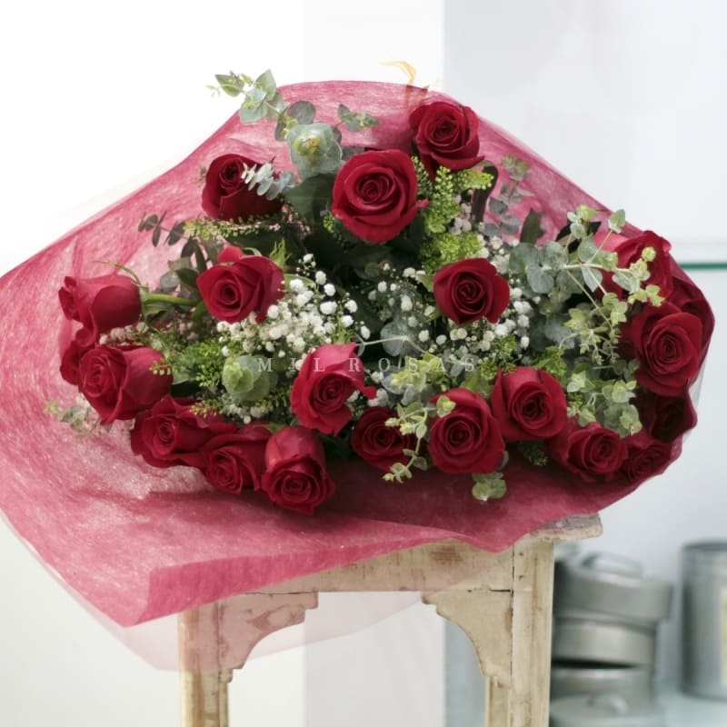

Ramo de rosas rojas - Especial
Con hermosas cabezas y tallos fuertes, sorprenderá con su mensaje; un color auténtico, rosas plenas de belleza y vida.
85,00€
COMPRARRamo de rosas azules
La rosa azul es de un color muy apreciado por ser capaz de comunicar los sentimientos más fieles y verdaderos. El azul da la sensación de haber conseguido un logro, una meta, un color para celebrar algo único.
69,90€
COMPRARRamo de rosas champagne
Siempre de una gran calidad y procedencia garantizada. La Rosa Champagne delicada por su color cremoso. Da equilibrio y elegancia a nuestros ramos.
69,95€
COMPRARRamo de rosas - Rosa claro
Siempre de una gran calidad y procedencia garantizada. Este color, la Rosa Clara o Bebé, desde los tonos sutiles del rosa hasta el chicle...siempre invita a la amistad y la ternura, tiene su propio brillo.
69,95€
COMPRARRosa individual
Rosa preservada individual del color de la Amistad y la Ternura, de la Felicidad.
35,00€
COMPRARRosa individual - XXL
Rosa Azul, el color de la Inteligencia y la Fidelidad, del sentimiento verdadero, de cabeza y corazón, equilibrio y pasión.